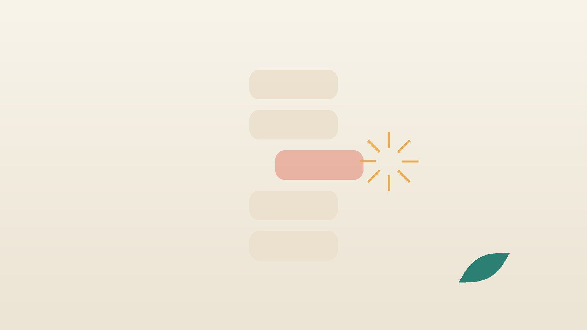

건강 칼럼 · 허리·골반 통증 · 인천 척추전방전위증 한의원
허리뼈가 앞으로 밀렸다는 말을 들었다면, 척추전방전위증 비수술 한방 관리

내 허리, 이런 증상이 있나요?
- 오래 서 있거나 설거지를 하면 허리가 빠질 듯 아프다
- 걷다 보면 엉덩이와 다리가 저려 쉬었다 가야 한다
- 아침에 허리를 펴기까지 시간이 걸린다
- 허리를 뒤로 젖히면 아프고, 앞으로 숙이면 조금 편하다
- 허리 가운데를 쓸어 보면 뼈가 계단처럼 툭 튀어나온 자리가 있다
- 학생 때 체조·야구처럼 허리를 젖히는 운동을 오래 했다
이 체크리스트는 진단 도구가 아닙니다. 밀린 정도와 신경 눌림은 X선과 MRI로 확인합니다.
바로 응급실이나 척추 전문 진료가 먼저인 신호
- 소변이 안 나오거나, 참지 못하고 새거나, 대변 조절이 안 된다
- 항문 주위와 엉덩이 안쪽, 사타구니가 감각이 없거나 남의 살 같다 (안장 부위 감각 저하)
- 발목이나 엄지발가락을 들어 올리는 힘이 며칠 사이 눈에 띄게 약해진다
- 양쪽 다리가 함께 저리고 힘이 빠진다
- 열이 나거나, 넘어진 뒤, 또는 암 치료 병력이 있으면서 허리 통증이 갑자기 심해졌다
앞의 두 가지는 허리 아래 신경 다발이 눌리는 마미증후군의 신호로, 늦어지면 회복이 어려울 수 있어 바로 응급실로 가셔야 합니다.
허리뼈는 왜 앞으로 밀리나요?
원인에 따른 분류는 1976년 Wiltse 등이 정리한 것이 널리 쓰이며, 흔한 두 가지는 다음과 같습니다.
- 퇴행성: 50대 이후, 특히 여성에게 많고 넷째와 다섯째 허리뼈 사이에서 잘 생깁니다. 뒤쪽 작은 관절(후관절)이 닳고 인대가 느슨해지며 뼈가 조금씩 미끄러집니다.
- 분리성: 뼈 뒤쪽 고리의 좁은 부분(협부)에 피로골절처럼 금이 간 척추분리증에서 시작합니다. 다섯째 허리뼈에 흔하고 청소년기 운동에서 시작되기도 합니다.
밀린 정도는 아래 뼈 윗면 길이를 넷으로 나눠 1~4단계로 표시합니다. 밀린 정도보다 신경이 얼마나 눌리고 마디가 얼마나 흔들리는지가 증상을 좌우합니다.
한의학은 척추전방전위증을 어떻게 보나요?
고전에는 이 병명이 없고 요통(腰痛)으로 다뤘습니다. 『소문』 맥요정미론은 '허리는 신(腎)의 집(腰者腎之府)'이라 하여, 허리를 돌리지 못하는 것을 신이 지친 징조로 보았습니다.
뼈를 붙잡아 주는 인대와 근육이 약해져 마디가 헐거워진 상태는 간신(肝腎)이 허해 근골을 받치지 못하는 것으로 해석합니다. 여기에 찬 습이나 뭉친 혈이 더해지면 통증이 고집스러워진다고 봅니다.
나의 허리는 어떤 유형일까?
여러 유형이 섞인 경우가 많습니다.
1. 간신허(肝腎虛) 받치는 힘이 약한 유형
- 이런 분에게 많아요
- 50대 이후, 출산을 여러 번 했거나 폐경 뒤인 분
- 나타나는 모습
- 오래 서면 허리가 내려앉는 듯하고 누우면 풀린다
- 함께 오는 몸의 신호
- 무릎 시림, 잦은 소변, 쉽게 지침
- 진찰에서 보이는 모습
- 허리 근육이 얇고 힘을 주면 금방 떨림
- 치료 방향
- 허리와 다리의 기반을 보하는 방향 (독활기생탕 계열)
- 오늘부터 해 볼 것
- 허리를 받치는 배 근육 운동을 하루 10분부터 시작해 보세요.
2. 한습(寒濕) 차고 무거운 유형
- 이런 분에게 많아요
- 습한 곳에서 일하거나 몸이 찬 분
- 나타나는 모습
- 비 오는 날이나 찬 바닥에 앉은 뒤 허리가 무겁게 굳는다
- 함께 오는 몸의 신호
- 허리 아래가 차고 몸이 붓는 느낌
- 진찰에서 보이는 모습
- 허리를 만지면 서늘하고 혀에 흰 이끼가 낌
- 치료 방향
- 찬 습을 덜어 허리를 데우는 방향 (신착탕 계열)
- 오늘부터 해 볼 것
- 찬 바닥에 바로 앉지 말고 허리를 따뜻하게 두세요.
3. 어혈(瘀血) 한 점이 찌르는 유형
- 이런 분에게 많아요
- 무거운 것을 오래 들었거나 넘어진 적이 있는 분
- 나타나는 모습
- 한 자리가 찌르듯 아프고 밤에 더하다
- 함께 오는 몸의 신호
- 돌아누울 때 날카로운 통증
- 진찰에서 보이는 모습
- 특정 마디 옆을 누르면 뚜렷이 아픔
- 치료 방향
- 뭉친 혈을 풀어 통증을 줄이는 방향 (신통축어탕 계열)
- 오늘부터 해 볼 것
- 통증이 심한 날은 무리하게 스트레칭하지 말고 짧게 자주 걸으세요.
한의원에서는 어떻게 진찰하나요?
- 영상 확인: 가져오신 X선·MRI로 몇 번째 마디가 몇 단계 밀렸는지, 분리증이 있는지 확인합니다.
- 신경 검사: 다리 힘, 감각, 무릎·발목 반사를 보고 대소변 변화가 없는지 꼭 여쭙습니다.
- 움직임: 숙이기, 젖히기, 한 발 서기에서 통증이 어떻게 달라지는지 봅니다.
- 초음파와 몸 상태: 초음파로 허리 깊은 근육을 보고, 맥과 혀, 복용 약을 확인합니다.
침·약침·추나·한약 치료는 어떻게 하나요?
1. 침 치료
- 신수(腎兪): 둘째 허리뼈 가시돌기 아래에서 양옆으로 손가락 두 개 너비 떨어진 자리입니다. 허리 기반이 약한 유형에 씁니다.
- 명문(命門): 같은 둘째 허리뼈 가시돌기 바로 아래, 등 한가운데 줄 위입니다.
- 대장수(大腸兪): 골반 뼈 윗선을 이은 높이의 넷째 허리뼈 아래에서 양옆으로 손가락 두 개 너비입니다.
- 위중(委中): 무릎을 살짝 굽혔을 때 오금 가로 주름의 정가운데입니다. 허리와 등 통증에 예부터 함께 써 왔습니다.
밀린 마디 위를 깊게 찌르기보다 주변 근육을 푸는 데 중점을 둡니다.
2. 약침·초음파 가이드 약침과 추나 요법
약침은 일반 약침과 초음파 가이드 약침을 모두 시행하며, 아픈 부위의 깊이와 주변 구조에 따라 진찰 후 골라 씁니다. 초음파 가이드 약침은 초음파 화면으로 바늘 끝을 확인하면서 놓는 방식입니다. 밀린 마디 양옆의 후관절과 그 위를 덮은 다열근 같은 깊은 근육의 위치를 초음파로 보며 바늘 깊이와 방향을 정합니다.
진찰 후 추나 요법을 시행합니다. 밀린 마디를 직접 세게 누르거나 비트는 동작은 하지 않고, 골반과 엉덩관절, 등 위쪽처럼 허리 부담을 키우는 주변 관절의 정렬을 부드럽게 맞춥니다. 굳은 근육에는 온열 요법을 더합니다.
3. 한약
유형에 따라 허리를 받치는 근골을 보하거나, 찬 습과 뭉친 혈을 푸는 탕약을 처방합니다. 임신 중이거나 간 질환이나 신장 질환 병력이 있다면 진료 때 꼭 알려 주세요. 확인 후 안전한 약재로 처방합니다. 진통제나 골다공증 약을 드신다면 알려 주시면 확인해 처방합니다. 한약은 원장이 원내 탕전실에서 약재 선별부터 달이는 과정까지 직접 관리하며, 10일분씩 처방해 복용 경과를 보고 약재 구성과 양을 조절합니다. 아픈 자리는 초음파 가이드 약침과 추나로 다스리고, 통증이 오래가게 만드는 몸속의 기혈 순환과 장부 기능은 체질에 맞춘 한약으로 함께 살피면 통증 완화와 재발 관리를 함께 도모할 수 있습니다.
원장님이 네이버 블로그에 진료 이야기와 건강 정보를 꾸준히 올리고 있습니다. 더 많은 이야기는 블로그에서 확인해 보세요.
블로그 보기관리는 어떤 순서로 진행되나요?
- 영상과 신경 확인 밀린 정도와 신경 눌림, 응급 신호 여부를 먼저 봅니다.
- 통증 줄이기 침·약침·온열 요법으로 급한 통증과 근육 경직을 낮춥니다.
- 받치는 힘 기르기 추나와 한약, 집에서 하는 코어 운동으로 허리 안정성을 높입니다.
- 유지와 점검 통증이 줄면 간격을 늘리고, 저림이나 힘 빠짐이 늘면 다시 영상을 확인합니다.
기간과 횟수는 증상이 얼마나 오래되었는지, 동반 증상이 무엇인지에 따라 달라지며, 진찰 후 개인별로 안내합니다.
집에서 지키면 좋은 허리 관리
- 배 힘주기: 누워서 무릎을 세우고 배꼽을 등 쪽으로 살짝 당긴 채 10초 버티기를 10번 합니다.
- 젖히는 동작 줄이기: 허리를 뒤로 크게 꺾는 스트레칭과 윗몸 젖히기는 통증을 키울 수 있어 피합니다.
- 체중 조절: 배가 나오면 허리뼈가 앞으로 끌리는 힘이 커지므로 뱃살부터 줄여 보세요.
- 걷기: 평지를 10~20분씩 나눠 걷고, 저리면 잠시 앉아 쉬었다 갑니다.
다른 진료가 함께 필요한 경우
- 대소변 장애나 안장 부위 감각 저하가 생기면 바로 응급실로 가세요.
- 다리 힘 빠짐이 진행하거나 걷는 거리가 눈에 띄게 줄면 척추 전문 의료기관에서 수술 필요성을 평가받으세요.
- 청소년이 허리를 젖힐 때 아프다면 정형외과에서 분리증을 확인하세요.
- 폐경 뒤라면 골밀도 검사도 받아 보세요.
자주 묻는 질문 Q&A
- Q1. 척추전방전위증이면 꼭 수술해야 하나요?
- 신경 마비나 대소변 장애가 없으면 비수술 관리를 먼저 해 보는 경우가 많습니다.
- Q2. 분리증과 전방전위증은 같은 병인가요?
- 분리증은 뼈 고리에 금이 간 상태이고, 그로 인해 뼈가 앞으로 밀리면 분리성 전방전위증이라 합니다.
- Q3. 밀린 뼈가 침이나 추나로 제자리로 돌아가나요?
- 밀린 뼈 자체를 되돌리는 치료는 아닙니다. 통증을 줄이고 허리를 받치는 근육과 주변 관절을 관리하는 것이 목표입니다.
- Q4. 운동은 해도 되나요?
- 배와 엉덩이 근육을 기르는 운동이 도움이 됩니다. 허리를 크게 젖히거나 무겁게 드는 운동은 피하세요.
- Q5. 협착증 증상과 같이 올 수 있나요?
- 퇴행성은 척추관이 함께 좁아져 걸을 때 다리가 저리기도 합니다.
- Q6. 허리 보조기를 계속 차도 되나요?
- 심할 때 짧게만 쓰세요. 오래 차면 근육이 약해질 수 있습니다.
- Q7. 교통사고 뒤 허리가 심해졌는데 자동차보험 진료가 되나요?
- 가능합니다. 골절이나 밀림이 커졌는지 영상으로 먼저 확인하세요.
- Q8. 허리가 뻐근할 때 집에서 눌러 볼 자리가 있나요?
- 엎드려 가족이 신수혈 주변을 엄지로 지그시 눌러 주세요. 밀린 마디 위는 세게 누르지 마세요.
문원열 대표원장한의사 · 365스마일한의원
임상 경력 15년, 인천 서구 가정동에서 개원 후 10년째 진료하고 있으며, FCST 턱관절학회·연부조직학회·침도학회 등에서 활동합니다. 아픈 곳만이 아니라 증상의 원인을 찾아 진료합니다.
진료 안내
- 진료시간
- 평일 09:00~20:00 (점심시간 13:00~14:00, 접수 마감 19:30)
토·일·공휴일 09:00~15:00 (접수 마감 14:30) - 주소
- 인천광역시 서구 가경주로 46, 2층 (가정동)
인천2호선 가정중앙시장역 인근
영상으로 길 안내 보기 → - 주차
- 한의원 건물 바로 앞 1층 도원주차장
- 예약
- 예약 바로가기 또는 전화 예약
진료시간은 사정에 따라 바뀔 수 있으니 방문 전 전화로 확인해 주세요.
함께 읽으면 좋은 칼럼
건강 칼럼 전체 보기 →

참고 자료
- Wiltse LL, Newman PH, Macnab I. Classification of spondylolisis and spondylolisthesis. Clin Orthop Relat Res, 1976
- Matz PG, et al. Guideline summary review: an evidence-based clinical guideline for the diagnosis and treatment of degenerative lumbar spondylolisthesis. Spine J, 2016
- 『황제내경 소문(素問)』 맥요정미론(脈要精微論)
- 질병관리청 국가건강정보포털 — 원문
※ 이 글은 일반적인 건강 정보이며, 개인의 상태에 따라 치료 방법과 결과는 다를 수 있습니다. 정확한 진단과 치료는 진료를 통해 결정됩니다. 침·약침 시술 후 드물게 멍, 통증 등이 생길 수 있습니다.